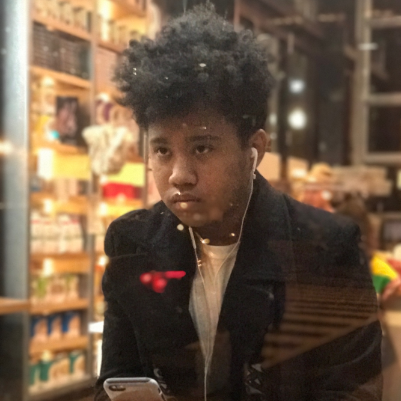

Meet the Members
Dylan is the creator of the band. He is the backbone of the rhythm section and has been playing drum for almost 8 years.
"Boop Boop Doop I play drums."
"Boop Boop Doop I play drums."
Jaichint is the saxophone player and specializes in amazing solos and technically musical licks.
"I play drum on pans as little kid. Then I play saxophone as lder little kid. Now I play saxophone and drums as older kid."
"I play drum on pans as little kid. Then I play saxophone as lder little kid. Now I play saxophone and drums as older kid."

Dennis is the main audio engineer and producer. His roles include setting up recording equipment and mixing the music tracks.
"I played violin until quit and started to produce beats using the DAW electronically through Fruit Loops."
"I played violin until quit and started to produce beats using the DAW electronically through Fruit Loops."
Connor is the singer whose low voice provides a great contrast to the instrumentalists. He also helps with audio engineering.
"I've been singing in the shower and car for my entire life, but I started choir in 6th grade and haven't stoppedsince."
"I've been singing in the shower and car for my entire life, but I started choir in 6th grade and haven't stoppedsince."